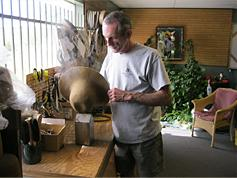
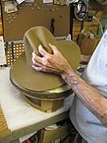

Our-Hats

Felt Fedora Hats
In the 1920s and 1930s during the prohibition era, the Fedora became a staple for the gangsters like Al Capone and the detective who chased him.This stylish piece of headwear continued its popularity in the 1040s and the 1950s by the entertainment industry and that trend continues today.

Caps
Flat caps were popular in the early 20th century and worn by 'lower' class workers such as newsboys, dockworkers and farmers but was also worn by artisans.Higher class sportsmen, drivers and golfers also sported this as a leisure hat. Although traditionally a men's cap, it has seen a resurgence in popularity with women.
About Heritage Hats

Heritage Hats provide quality custom made and brand name hats with a variety of style for customers in the Phoenix-Scottsdale-Cave Creek Arizona areas and nationwide.There is a page dedicated to each style of hat we carry and information about the hat's history, fashion, and function. We know that a hat is an expression of your unique personality and style and we hope you find our website a helpful guide while searching for that perfect hat. We also have a large selection of hat bands and other accessories to provide even more individual choices.
Rich Glisson, Owner
Our Awards
Featured on Arizona Highways TV Program
Featured in Arizona Highways Magazine-1990
Featured in the Arizona Republic-1988
Featured in the Arizona Republic business section-2009
Best of Phoenix Magazine-1992
Recommended “Best place to buy a hat” by Arizona Republic newspaper-1996
Winner of Best of Phoenix
Winner of Stetson's Platinum Award
Hat Care Tips
 At Heritage Hats, we know buying a hat is an investment.It also shows your individual style and carries memories with it throughout your life.It is often handed down through generations so we know that keeping good care of your hat is important for both the fabric of the hat and the fabric of your life. Here are some simple care tips to keep your hats looking their finest for many years to come.
Use a soft-bristled brush to dust hats regularly. A damp terrycloth bath towel will also remove dust. Rub the surface of the hat in a circular, counterclockwise motion.For Felt hats
Use a gum eraser on stains too deep to remove with a brush or towel. If sponging doesn't remove all the marks, try sanding with 100-grit paper. Move the sandpaper, very gently, in counterclockwise direction. Never press into the hat, and never press the hat into the paper.
Do not take your hat on and off your head by handling the crown. Instead, use the front and back of the brim next to the crown bend.
Do not set your hat down on its brim, which causes it to flatten and lose its shape.
Don't leave your hat anywhere where it gets very hot, such as an enclosed vehicle.
For Straw hats
Wipe with a soft cloth dipped in warm suds made with a synthetic detergent or soap.
Rinse with another cloth barely dampened with plain water and then allow to air dry.
Do not get a straw hat too wet or you could damage it.
Restoration Tips
Heritage Hat Cleaners is located on the premises of our retail store.We are fully equipped to offer a complete range of hat cleaning/blocking and restoration services that can restore your older hat or make style changes to a hat that you purchase at Heritage Hats. We are the leading hat cleaning and blocking service in the Phoenix-Scottsdale-Cave Creek area and serve both individual and commercial customers.Hats are cleaned and blocked to your specific instructions.
This service is not offered for canvas or straws but you can find some do-it-yourself tips for these materials on our Hat Care Tips page.
The cleaning process includes: complete dry cleaning your hat, re-blocking and shaped to the style you desire,and replacing your sweatband if necessary.We strive to do all necessary services within 3 working days.
Cleaning and blocking service- $60.00
Re-shaping crown- $25.00
Re-shaping brim- $20.00
Sweatband replacement- $45.00
Hours of operation
Monday 10:00 AM - 5:00 PM
Tuesday 10:00 AM - 5:00PM
Wednesday 10:00 AM - 5:00PM
Thursday 10:00 AM - 5:00PM
Friday 10:00 AM - 5:00PM
Saturday 10:00 AM - 5:00PM
Sunday Closed
Contact us!
First Name
Last Name
Comments, concerns, reviews, we want to hear it all!